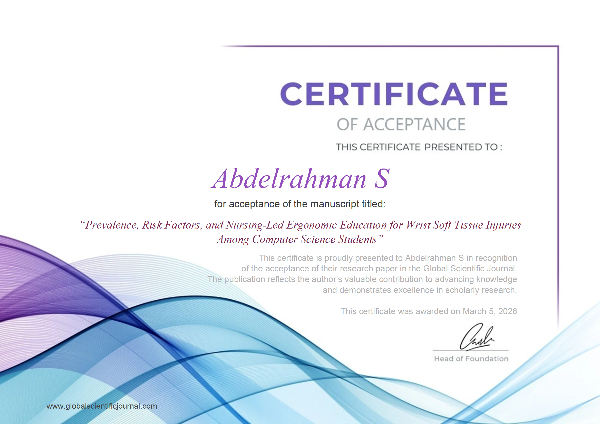

Engineering the Future of Health Systems
R&D Manager at DIME | Registered Nursing Professional (2024-2027) | Interoperability & AI Specialist
The Health Tech Stack
Clinical-Tech Interoperability & Standards
Standards
Seamless data exchange and semantic interoperability.
Decision Support
Computational logic and clinical reasoning rules.
Health Systems
End-to-end architecture and administration.
- System Interoperability
- System Architecture
- System Design & Admin
Core Skills & Documentation
Scientific rigor and strategic implementation.
- LaTeX Expert & Manuscript Dev
- Generative AI & Prompt Design
- Agile & Clinical Research
Featured Research
The GSJ Spotlight

Prevalence, Risk Factors, and Nursing-Led Ergonomic Education for Wrist Soft Tissue Injuries Among Computer Science Students Nursing-Led Ergonomic Ed. for Wrist Soft Tissue Injuries
A mixed-methods study exploring ergonomic risk factors and prevention workflows. Integrates clinical health informatics with practical occupational safety interventions.
Access Preprint at DeSci NodesCareer Data Stream
Experience & Education
R&D Manager
DIME
Leading initiatives in clinical intelligence and CDSS development. Bridging the gap between clinical needs and technical execution.
Registered Nursing
Kafr El-Sheikh University
Integrating clinical front-line experience with backend informatics to build grounded, practical health systems.
Verified Certifications
- Generative AI Strategic Leader (Vanderbilt) ID: G174QWOUKZZ2 | Aug 2025
- Health Informatics (Johns Hopkins Univ.) ID: KFJH94JH00X7 | Jul 2025
- Clinical Trials Operations (Johns Hopkins Univ.) ID: T2AWQ1FC1GKR | Jul 2025
DataCamp Approved Data Analyst
Linguistic Interfaces
English: Professional Working
Japanese: Elementary
Clinical Systems Portfolio
Legacy Projects & CDSS Implementations
Adaptive Medication Safety CDSS
An advanced Clinical Decision Support System designed for real-time interaction checks and risk-aware dosing logic.
Labs & Investigation Identifier
Ontology-aligned logic system engineered for mapping presenting symptoms directly to evidence-based laboratory investigations.
Nursing Time Scheduler
A Flutter application and operational system dedicated to shifting and scheduling nursing staff efficiently.
View RepositoryEstablish Connection
Global Contact & Social Connect